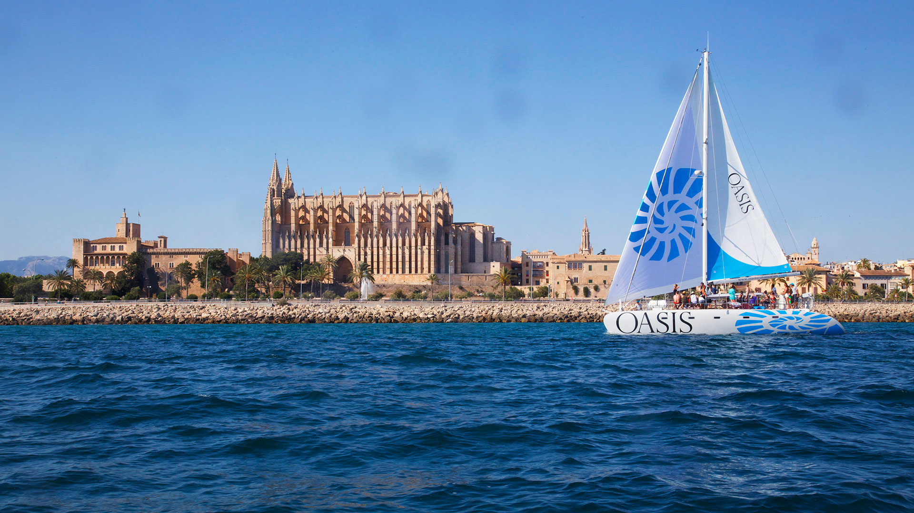
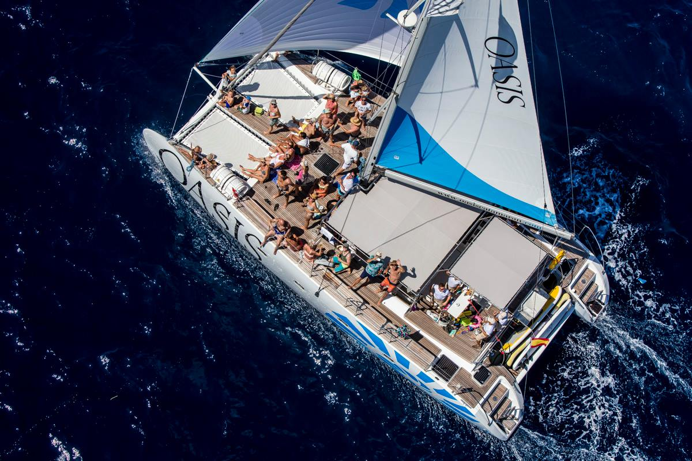
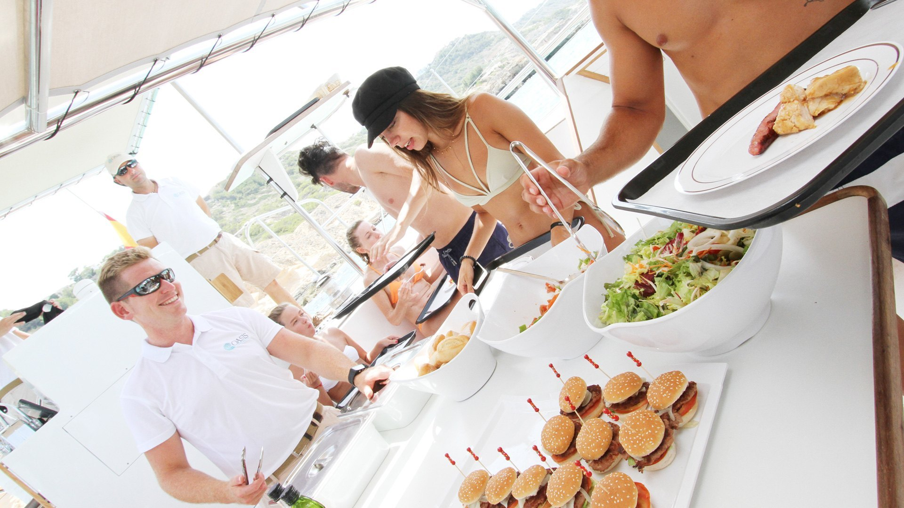

Palma de Mallorca Proposal - May 14th to 16th, 2020
Better travel
2020-01-10
ACCOMMODATION
May is already high season in Palma, so, many hotels are already fully booked with individual and groups reservations, but we are happy to offer you two hotel options:
Alternative Hotel
Map
PROGRAMME
May 14th
At 9.00h the plane will arrive in Palma’s Airport, where a person from our staff will welcome guests and scort them to the bus.
Guests will be transferred directly to the harbour where the catamaran will be waiting for them
Catamaran Sailing Activity
From 10.00h to 15.00h Guests will relax for some hours skipping all the bad vibes in this small catamaran! The boat features sound system, bar, sunbathing areas and bathrooms. Guest will expend all the morning, they will have time to take a bath and to have lunch. The lunch will be served in there, so they will taste Mediterranean barbacue while sailing. Non alcoholic drinks are included, but you have the option to upgrade to a open bar with beer and sangría (the alcoholic drinks will be served after the bath time)
- Location Palma
- Duration 5 hours
- Capacity 45 pax
- Included Boat renting, staff, non alcoholic drinks, bbqlunch, insurance.
Catamaran will be in exclusive for the group



After the activity guests will be transferred to the hotel, where they will find their luggage. They will have some free time till dinner
Dinner at Nautico
May 15th
After breakfast, guests will go to a professional visit.
Lunch at Caballito de Mar
For lunch we suggest a very nice restaurant located near the Cathedral.
After lunch guest will have free time to walk around and go shopping or visiting the oldtown of the city.
Dinner and party at Puro Beach Palma
Puro beach Palma is located in a small peninsula, so, it is surrounded by the sea.
It was the first Puro Beach and it opened in June 2005, from the first moment it has become an icon.
The menu Puro offers is created from a fusion of global cuisine, takes inspiration from flavors, colors and spices of Miami, Marrakech & Melbourne. Healthy, tasty and elaborated with organic ingredients.


We suggest a BBQ dinner, no seated but using the sofas and beds. They won’t have the whole group in exclusive but they will have a privatized area, after dinner they will have a DJ and drinks until 00.00h
If they want to continue the party they will need to go to another venue from the same owners.
After the party, guests will be transferred to the hotel.
On May 16th they will be picked up at 7.30h to go to the Airport.
TERMS AND CONDITIONS
Rates valid for 2020
For a group of minimum 40 pax.
VAT included.
No reservation has been done. Availability upon request.